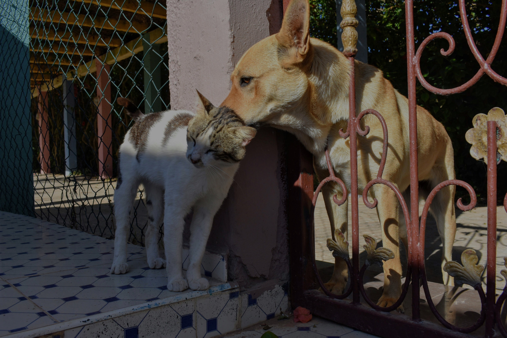
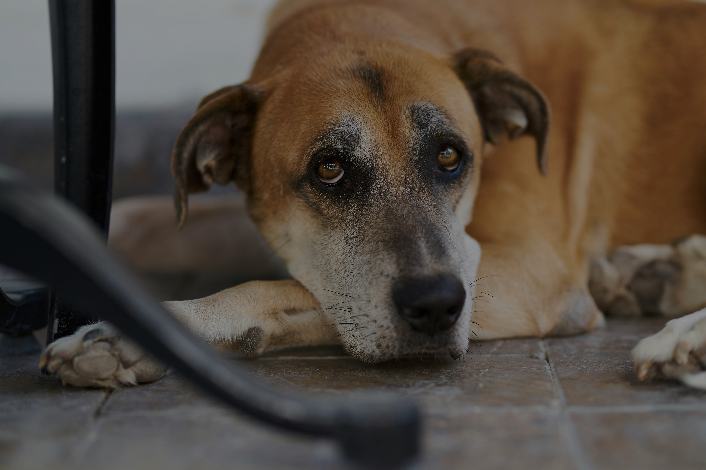
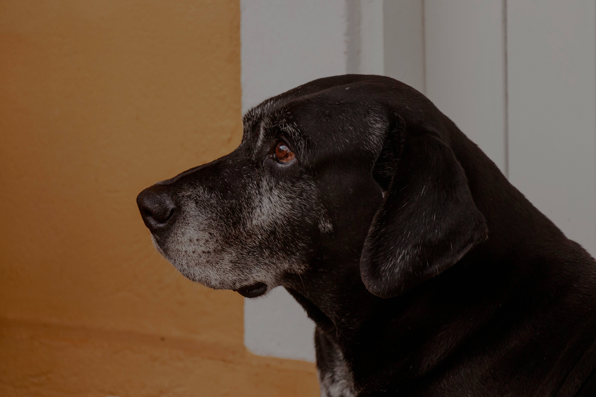
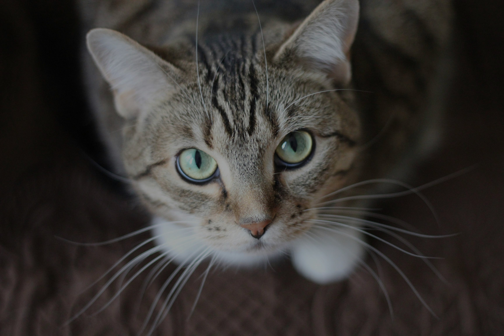

Faça parte da "COTIPET" e venha adotar um animalzinho!!! Baixe nosso aplicativo, no link abaixo.

Também sentimos
Cerca de 10 milhões de animais, são abandonados anualmente no Brasil, criminosos que praticam os maus-tratos, saem ilesos pela falta de legislação rigorosa contra esse tipo de crime " Lei Federal nº 9.605, de 12 de fevereiro de 1998". Faça parte da luta de mudar essa realidade, conosco!!! Clique no botão abaixo e acesse nosso campo de denúncia e adoção.

No nosso quintal Cotia, SP
Atualmente atuamos em "COTIA", região metropolitana de "São paulo". Nosso objetivo é tornar a cidade de Cotia, uma cidade acolhedora e segura para seus animais residentes. Veja a área que atuamos abaixo.

Denuncie! Disque 181
Sua coragem e disposição, podem fazer a diferença. Se presenciar ou estiver precisando maus-tratos aos animais, clique no botão de denúncia abaixo ou ligue para "181" e denúncie. Contamos com você!!!

Sobre nós :)
Somos a "COTIPET", nossa missão é ser a ponte entre os animais de rua e um futuro melhor. Somos uma organização dedicada à denúncia de maus-tratos e à adoção responsável de pets em situação de rua. Acreditamos que cada animal merece um lar amoroso com uma vida digna. Juntos podemos garantir que esses animais recebam a ajuda e o carinho que tanto precisam.